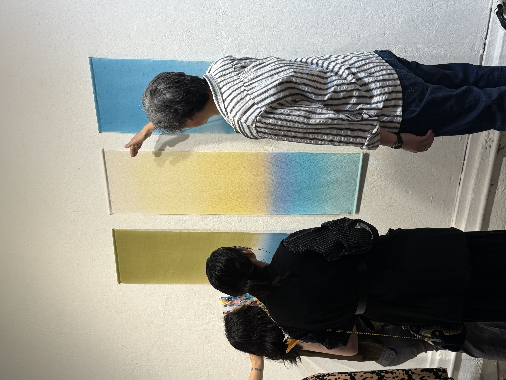
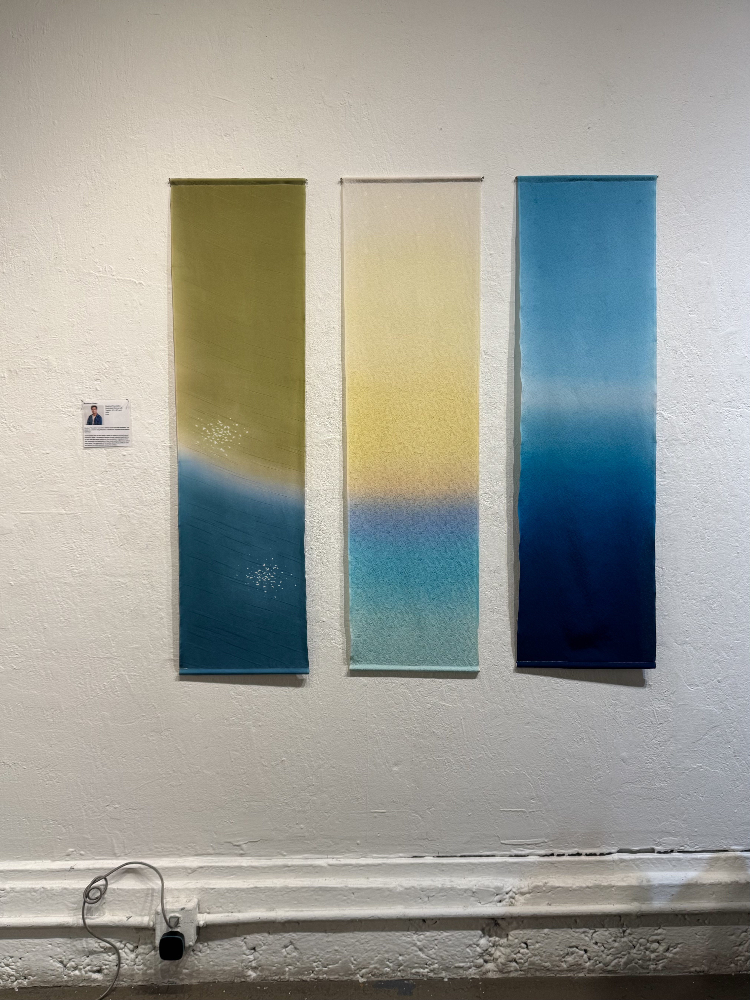

Gradient Translation


Gradient Translation is a triptych of hand-dyed silk tapestries created using hikizome, a traditional Japanese brush-dyeing technique. The color palettes and designs are inspired by ocean scenes, reflecting the shifting hues, fluid movements, and gradations of color looking out into the sea. Drawing on patterns and techniques I learned in Tokyo and Kyotango six months ago, each tapestry reflects a different approach to color and composition. Repeated applications of dye build upon one another, allowing color and form to emerge gradually through the process. Variations in the silk, movement, and application of dye give each piece its own character. The large scale of the textiles allows these shifts in color and texture to unfold gradually across the surface.